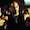
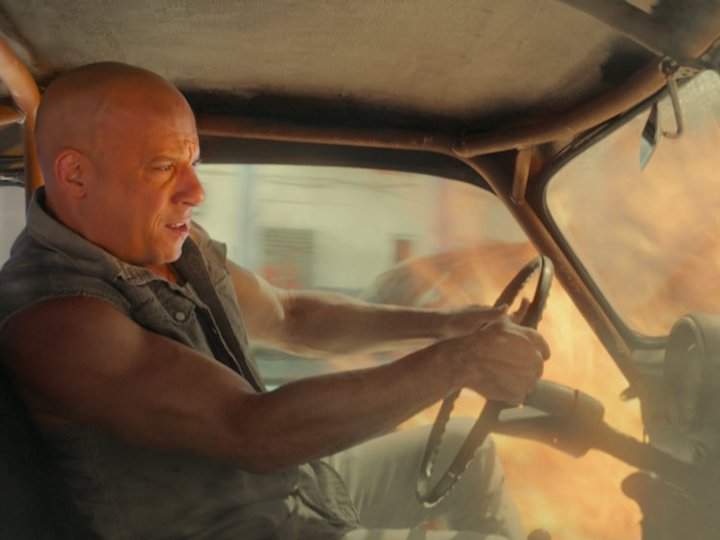

Full Cast and Crew
- Vin Diesel - Dominic Toretto
 Paul Walker - Brian O'Conner
Paul Walker - Brian O'Conner Michelle Rodriguez - Letty Ortiz
Michelle Rodriguez - Letty Ortiz Jordana Brewster- Mia Toretto
Jordana Brewster- Mia Toretto- Tyrese Gibson - Roman Pearce
 Ludacris - Tej Parker
Ludacris - Tej Parker
The film is based on an article, titled "Racer X" , about New York street clubs that race Japanese cars late at night, although the film is set primarily in Los Angeles. While elite street racer and ex-convict Dominic Toretto (Vin Diesel) and his crew: Jesse (Chad Lindberg), Leon (Johnny Strong), Vince (Matt Schulze) and Letty Ortiz (Michelle Rodriguez), are under suspicion of stealing expensive electronic equipment by hijacking moving trucks, Brian O'Conner (Paul Walker) is an undercover police officer who attempts to find out who exactly is stealing the equipment. He works for FBI agent Bilkins (Thom Barry) and LAPD Sgt. Tanner (Ted Levine). Falling for Dominic's younger sister, Mia Toretto (Jordana Brewster), Brian confesses to her his status as an undercover police officer and convinces her to come with him to save her brother and his friends from the truck drivers, who have now armed themselves to combat the robberies. He tracks Dominic's location by triangulating his cell phone signal and they arrive at the hijacking in progress to find Letty, badly injured in a car accident, and Vince critically wounded, having lacerated his arm and been shot by a truck driver. Brian and Mia work together with Dominic, Leon and Letty to rescue Vince. Brian then makes the difficult decision to blow his cover to the crew by phoning in for a medivac. The revelation enrages Dominic, who flees with Leon, Letty, and Mia as the medivac arrives for Vince. Brian soon follows Dominic to his house and holds him at gunpoint to prevent him from fleeing further. Jesse arrives shortly afterwards, apologizing for his actions at Race Wars and pleading for Dominic's help with Johnny Tran (Rick Yune). Moments later, Tran and his cousin Lance Nguyen (Reggie Lee) perform a drive-by shooting, killing Jesse. Brian and Dominic chase them, with Dominic driving his late father's modified 1970 Dodge Charger. Dominic forces Lance's motorcycle off the road, severely injuring him, while Brian shoots and kills Tran. Afterwards, Brian and Dominic engage in an impromptu street race, narrowly avoiding a passing train. However, Dominic collides with a semitruck and rolls his car twice, injuring himself, and rendering the Charger undrivable. Instead of arresting him, Brian hands over the keys to his Supra and lets Dominic escape, using the line "I owe you a ten-second car."
Full Cast and Crew
|
|
 Gloria is an unemployed writer struggling with alcoholism. Her errant behavior prompts her frustrated boyfriend Tim to break up with her and evict her from their New York City apartment. Forced to move back to her hometown in New England (the fictional Mainhead), Gloria reunites with her childhood friend Oscar, who now runs his late father's bar. Oscar is warm and welcoming to Gloria; he brings her an old television set for her unfurnished house and offers her a job at the bar to help her, which Gloria accepts.
Working at the bar aggravates Gloria's alcohol problem. Each shift, she hangs out and drinks until morning with Oscar and his friends, Garth and Joel, while sleeping it off on a bench near a children's playground. At the same time, a giant reptilian monster appears in Seoul, leaving death and destruction in its wake. Gradually, Gloria realizes that when she walks through the playground at exactly 8:05 am, she causes the monster to manifest and the creature's movements correspond with her own.
Gloria reveals her secret to Oscar and his friends; however, when Oscar steps onto the playground, he causes a giant robot to appear in Seoul. Gloria ultimately tries to make amends by having the monster spell out an apology in Korean, to the delight of the South Koreans and the media, and begins to avoid both the playground and alcohol.
After spending the night with Joel, Gloria discovers that a drunken Oscar is using the robot to taunt South Korea. After a tense confrontation, Gloria manages to make him leave. Oscar is jealous, believing that something happened between Gloria and Joel. Later that night at the bar, he drunkenly insults his friends and demands that Gloria drinks, then orders her to do so by threatening to return to the playground if she does not. The next morning, a sobered-up Oscar confesses his remorse and pleads with Gloria to forgive him. Gloria accepts his apology, but Oscar's controlling attitude becomes clear.
Gloria is an unemployed writer struggling with alcoholism. Her errant behavior prompts her frustrated boyfriend Tim to break up with her and evict her from their New York City apartment. Forced to move back to her hometown in New England (the fictional Mainhead), Gloria reunites with her childhood friend Oscar, who now runs his late father's bar. Oscar is warm and welcoming to Gloria; he brings her an old television set for her unfurnished house and offers her a job at the bar to help her, which Gloria accepts.
Working at the bar aggravates Gloria's alcohol problem. Each shift, she hangs out and drinks until morning with Oscar and his friends, Garth and Joel, while sleeping it off on a bench near a children's playground. At the same time, a giant reptilian monster appears in Seoul, leaving death and destruction in its wake. Gradually, Gloria realizes that when she walks through the playground at exactly 8:05 am, she causes the monster to manifest and the creature's movements correspond with her own.
Gloria reveals her secret to Oscar and his friends; however, when Oscar steps onto the playground, he causes a giant robot to appear in Seoul. Gloria ultimately tries to make amends by having the monster spell out an apology in Korean, to the delight of the South Koreans and the media, and begins to avoid both the playground and alcohol.
After spending the night with Joel, Gloria discovers that a drunken Oscar is using the robot to taunt South Korea. After a tense confrontation, Gloria manages to make him leave. Oscar is jealous, believing that something happened between Gloria and Joel. Later that night at the bar, he drunkenly insults his friends and demands that Gloria drinks, then orders her to do so by threatening to return to the playground if she does not. The next morning, a sobered-up Oscar confesses his remorse and pleads with Gloria to forgive him. Gloria accepts his apology, but Oscar's controlling attitude becomes clear.
|
|
Full Cast and Crew
|
One idea to ultimately keep in mind, as you count down the best movies of the year with us, is that this list is theresult of math. Each staff writer put together a top 20 of their favorite movies of the year, contributing to an aggregate list based on points assigned accor ding to where each film ranked. The goal was and has always been to provide an overview of staff tastes, however much individual lists differed. Which is to say: if you’re pissed or elated about anything being on here or not being on here, then chances are at least one Paste Movies staff writer agrees with you.
| Action | Comedy | Drama |
|---|---|---|
| The Equalizer (2014) | Dumb and Dumber | Citizen Kane (1941) |
| Mad Max: Fury Road (2015) | Monty Python and the Holy Grail | Moonlight (2016) |
| Logan (2017) | The Hangover | All About Eve (1950) |
| Black Panther (2018) | The Big Lebowski | Spotlight (2015) |
Copyright © QA Movies
 Tim Blake Nelson - Garth
Tim Blake Nelson - Garth Dan Stevens - Tim
Dan Stevens - Tim